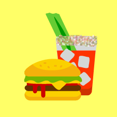
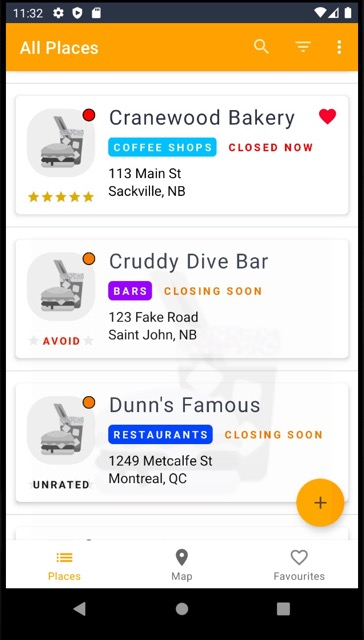
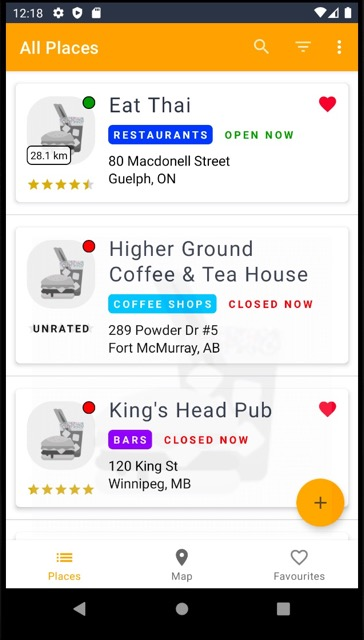
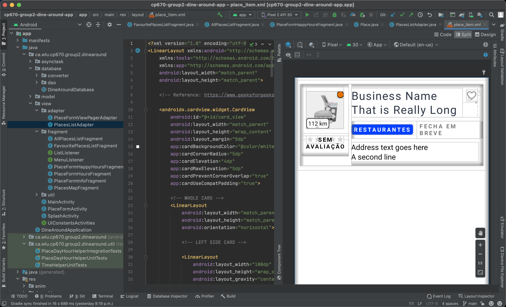
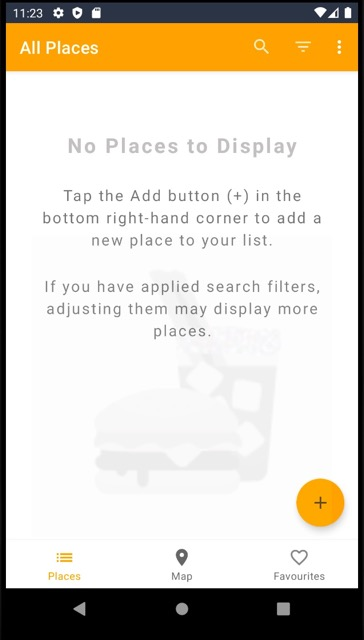
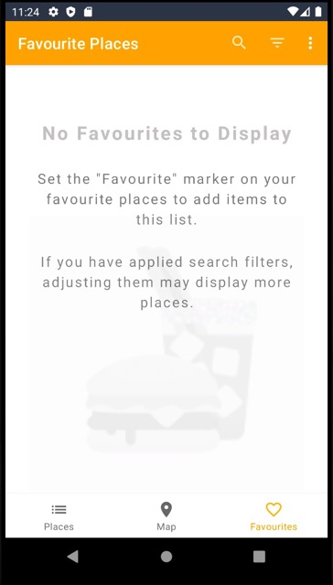

Developing Dine Around

Dine Around was built as an Android development course final project. Our team of five built an app for tracking favourite restaurants, coffee shops, and bars.
My responsibilities and my confidence grew throughout the duration of the project.
I volunteered to take care of the app logo (created by combining and editing two Ballicon icons), which proved to be a precursor to handling the design and implementation of the app's lists of "Places" and "Favourite Places".
With helpful guidance from a professionally-experiened team member, I was introduced to techniques for developing the main list of places. Quite quickly, I was able to contribute independently and effectively, designing and implementing the list layout and functionality, obtaining regular feedback from the team.
I successfully built out my features and understood how other components would need to integrate. We worked together to connect the pieces and troubleshoot any issues that arose.
Unfortunately, the repository is not public at this time. What follows provides some insights into the app as well as my involvmenet in development and testing.
Places Lists
- Code Examples:
- PlacesListAdapter.java
- place_item.xml
All Places: These sample "All Places" lists show restaurants, coffee shops, and bars with ratings, favourites, open status and distance, if nearby. The first example includes a place to avoid, a five-star rating, an unrated place, two places closing soon, and one closed place. The second includes a nearby place, ratings of four-and-a-half and five stars, an unrated place, two favourites, one open place, and two closed places.


place_item.xml defines the card layout for the All Places and Favourite Places lists. This screenshot of VS Code shows the XML file and resulting card layout using sample text.

The All Places and Favourite Places lists provide guidance when there are no results. All Places suggests using the Add button or adjusting search filters. Favourite Places suggests marking a place as a favourite or adjusting search filters.


Language Support
- Code Example:
- strings.xml (French)
Our application supported three languages: English, French, and Portugese. (It was a required element to support multiple languages.)
My role was to ensure that all strings were labelled and translated accordingly. I provided the French for the app and much of the English.
The different languages impacted the UI layout, as some languages have longer or shorter words and phrases than others. It was an interesting challenge to update the layout for this purpose. The VS Code image above of the place_item.xml layout shows the test strings used towards the end of the project, including the longest words and phrases explicitly used by the application.
Testing Dine Around
While there was much manual regression and feature testing all throughout the project, there was a requirement to provide unit testing in the codebase.
A number of helper classes containing business logic were relatively well isolated. As a result, these could be tested directly, making them good candidates for code-level test automation.
I provided tests for the code I wrote, as well as some other helper classes. Below, I include test code and the file under test for these instances.
Testing TimeHelper.java
- Tested by:
- TimeHelperUnitTests.java
Testing PlaceDayHourHelper.java
Related Commit History
These GitHub screenshots document changes to the places list, layout, language support, and testing files during the Dine Around project. Explore the Dine Around commit history for file-by-file summaries and screenshots.